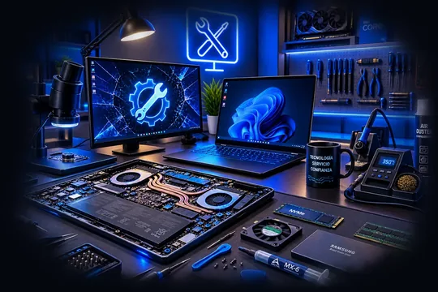
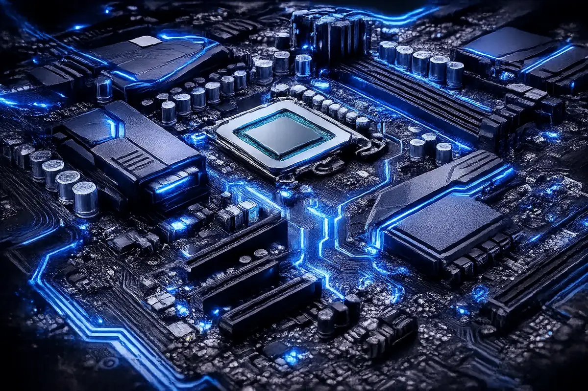

El equipo va lento
Casi siempre es el disco, no el procesador. El cambio a SSD es la mejora que más se nota.
Cobertura
Bello es la zona más extensa que cubrimos, así que aquí sí conviene coordinar la recogida con algo de anticipación. Agrupamos varias visitas del norte en la misma salida para no cobrarle desplazamiento.

Cómo funciona
Trabajamos a domicilio y en taller con cita previa, sin local abierto al público. Usted escribe por WhatsApp, coordinamos la hora y vamos por el equipo.
Le confirmamos qué encontramos antes de cambiar nada. Ningún repuesto se toca sin que usted lo apruebe.
¿No ve su barrio? Escríbanos igual: cubrimos Bello completo y el resto del Valle de Aburrá.
Lo que más nos llega de Bello
En Bello nos llegan sobre todo equipos de casa y de estudiantes: portátiles con años encima, mucho programa instalado y poco mantenimiento. Son los casos donde una limpieza con cambio de pasta térmica y un disco nuevo cambian por completo la experiencia, sin necesidad de comprar equipo.
Casi siempre es el disco, no el procesador. El cambio a SSD es la mejora que más se nota.
Fuente, cargador o conector de carga. Hay tres cosas que puede revisar usted antes de llamarnos.
Urgente: no lo encienda. Aquí las horas deciden si el equipo se salva.
Muchos de estos casos ni siquiera necesitan que movamos el equipo: si el problema es de programas o de virus, se resuelve por conexión remota el mismo día.

Cuéntenos qué equipo es y qué le pasa. Coordinamos la recogida y le decimos qué encontramos antes de cobrarle nada.